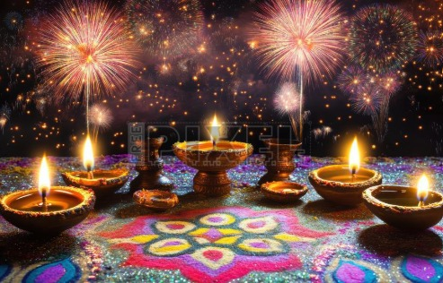
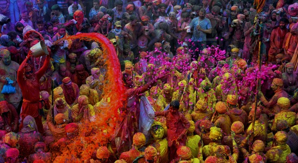
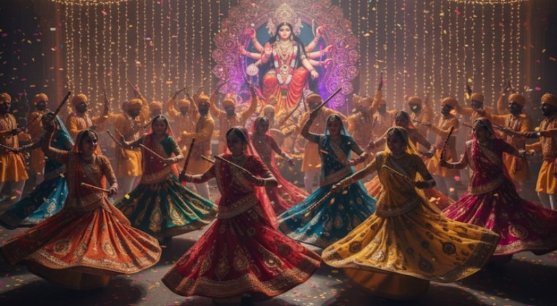

Diwali is the "Festival of Lights," a major holiday celebrated with lights, fireworks, and decorations like diyas and rangoli. It symbolizes the victory of good over evil and is a time for families to come together, wear new clothes, share sweets and gifts, and worship Goddess Lakshmi. The festival is a joyous occasion that brings happiness, unity, and a sense of new beginnings.
Diwali is known as the "Festival of Lights" and is celebrated with great joy across India and by many people worldwide.
Homes are decorated with oil lamps (diyas), candles, and colorful rangoli patterns.
Families wear new clothes and share sweets and gifts with friends and loved ones.
Prayers are offered to Goddess Lakshmi for prosperity and good fortune.
It marks the victory of good over evil, and for many, the return of Lord Rama to Ayodhya after defeating Ravana.
The festival is a time for families to gather, celebrate togetherness, and enjoy fireworks.
Diwali spreads messages of love, happiness, and unity among people.

Holi is the Hindu festival of colors that marks the arrival of spring, symbolizing
the victory of good over evil. It is celebrated with vibrant colors, music, dancing,
and feasting with friends and family. The festival begins with a bonfire called Holika
Dahan and the next day is filled with playing with colored powder, water, and water guns.

Navaratri is a nine-night Hindu festival honoring Goddess Durga, celebrating the
victory of good over evil. During this time, people worship different forms of the goddess,
often observe fasts, and engage in traditions like dancing and decorating their homes.
The festival, which occurs four times a year, is a time for spiritual devotion, family
celebrations, and seeking blessings for prosperity.
